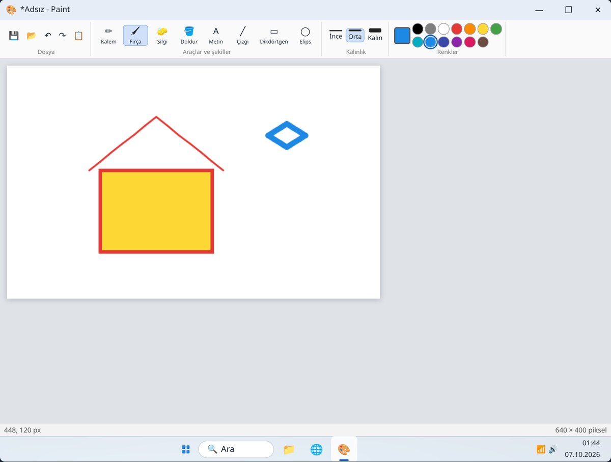
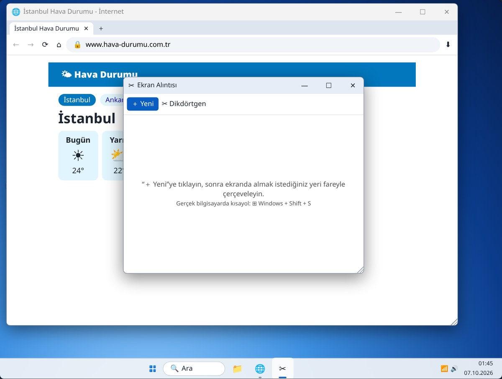
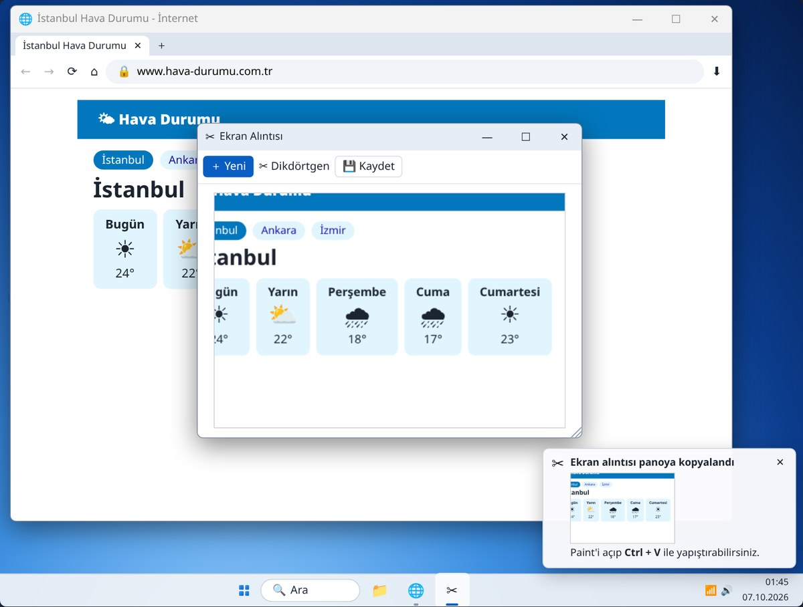
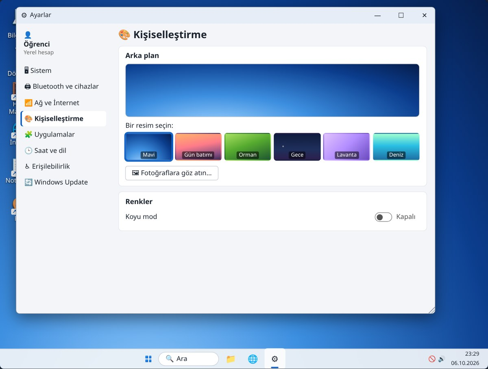
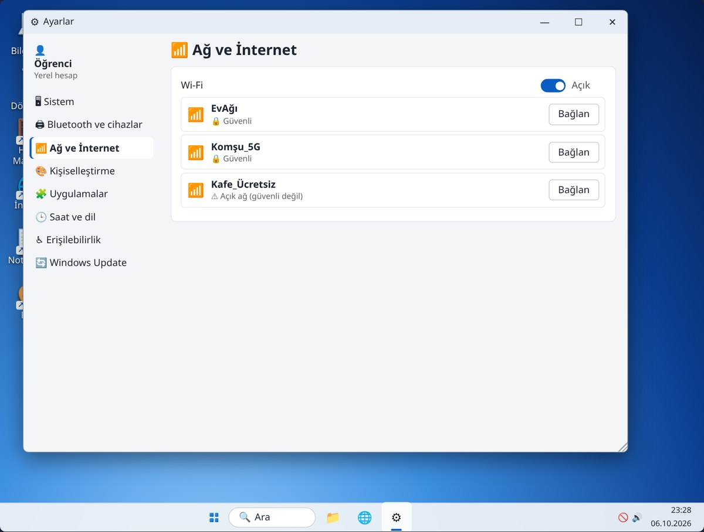
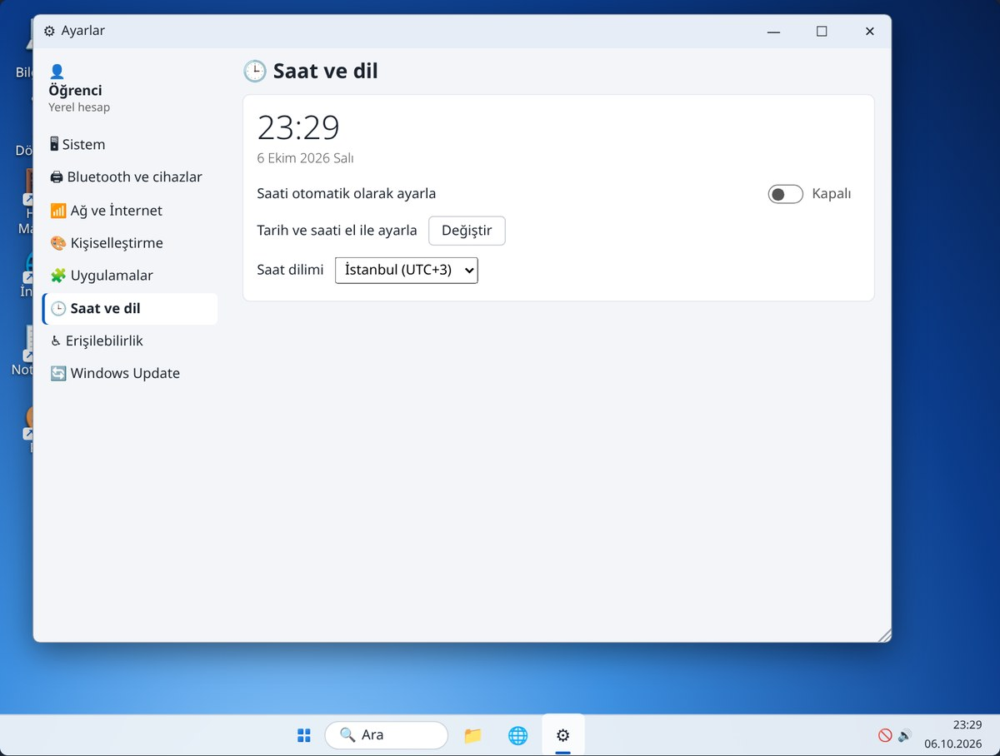
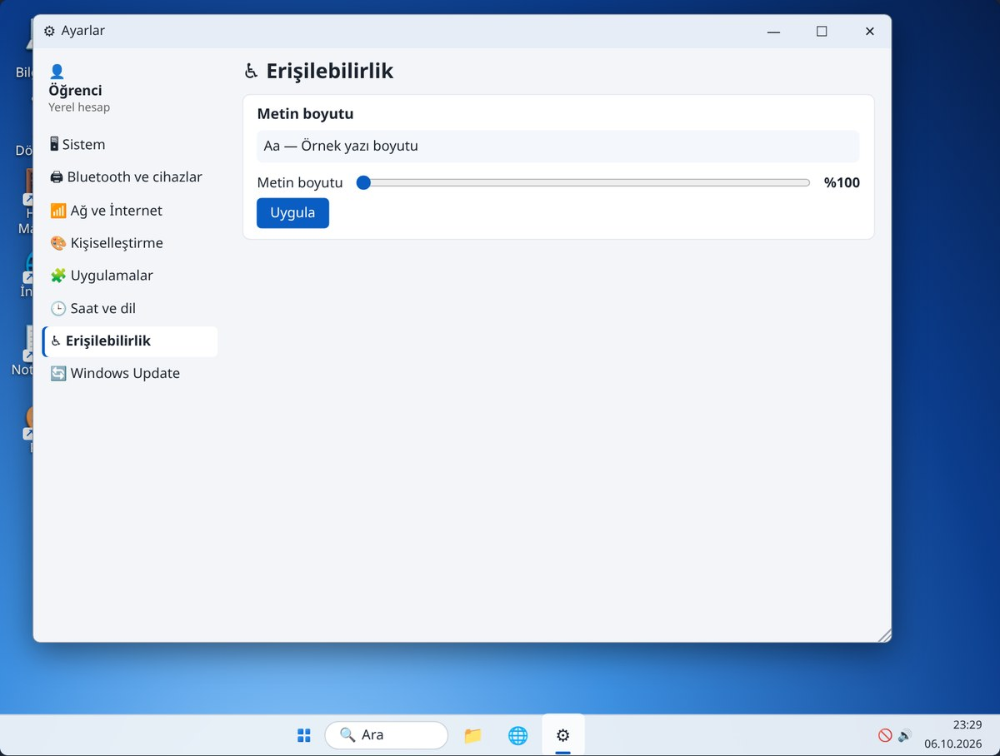
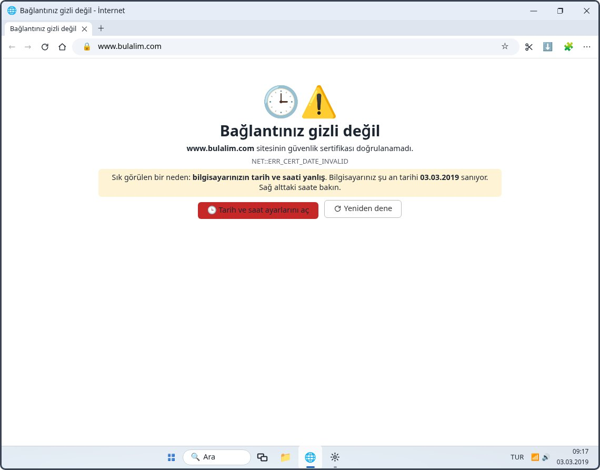
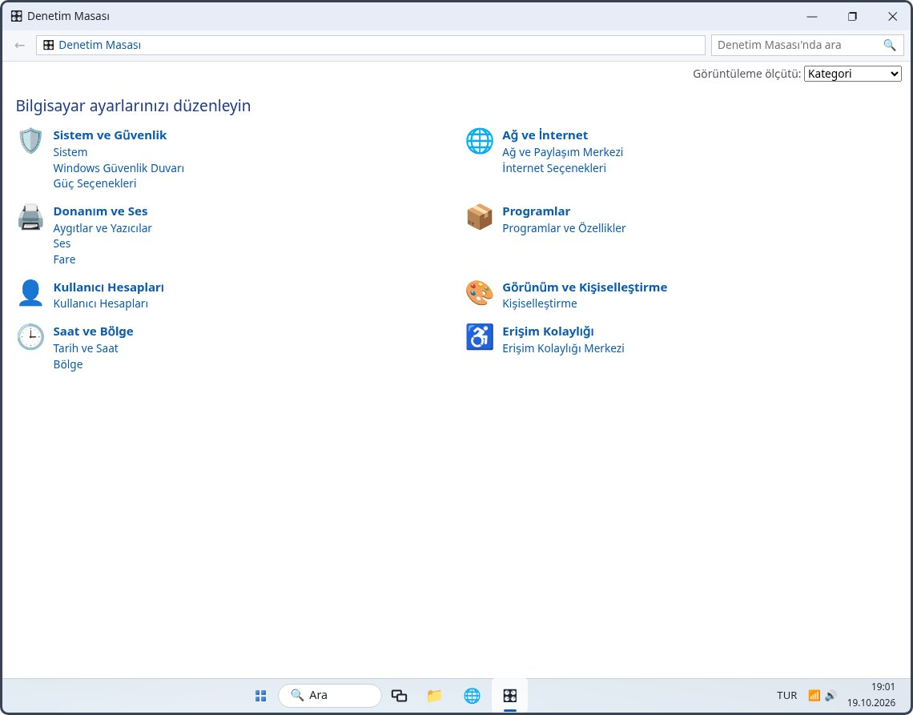
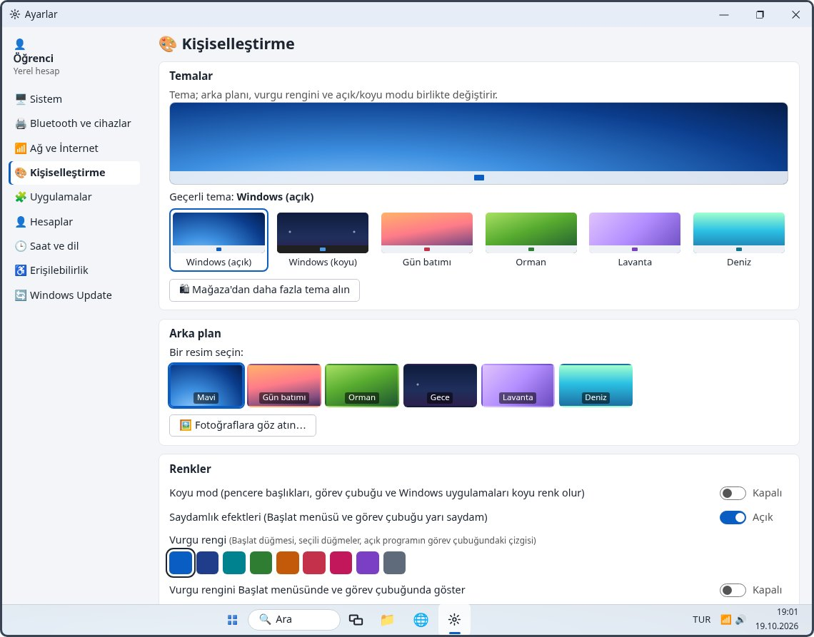

7. Hafta: Paint, Ekran Alıntısı ve Ayarlar
Alıştırmalar
Bu hafta
| 1 Paint ile resim | 25 dk |
|---|---|
| 2 Paint ile tebrik kartı | 25 dk |
| 3 Ekran Alıntısı | 20 dk |
| 4 Ayarlar | 30 dk |
| 5 Saati ve tarihi değiştirmek | 30 dk |
| 6 Denetim Masası | 35 dk |
| 7 Kısayol, ekran ayarı ve geri yükleme | 30 dk |
|---|---|
| 8 Temalar ve Mağaza | 35 dk |
| 9 Bluetooth: kulaklık, hoparlör | 25 dk |
| 10 Şifre, PIN, ekranı kilitlemek | 25 dk |
| 11 Ayarlar parkuru | 25 dk |
Hafta sonunda: ödev (gerçek bilgisayarda altı küçük görev) ve 12 soruluk test.
Ders 1 · Paint (25 dk)

Ders 1 · Paint
| ▭ Dikdörtgen | Bir köşeden başlayıp çapraz sürükleyin. Elips ve çizgi de aynı şekilde çizilir. |
|---|---|
| 🪣 Doldur | Rengi seçin, kenarları kapalı bir alanın içine tıklayın. |
| A Metin · Silgi | Metin: resme yazı ekler. Silgi: bir yeri siler. |
| Ctrl + Z | Son yaptığınızı geri alır. |
| Ctrl + S | Resimler klasörüne ilk resmim adıyla kaydedin. Sonra resme sağ tıklayıp Masaüstü arka planı olarak ayarla. |
Ders 2 · Paint alıştırması
| ▭ Dikdörtgen | Bir köşeden karşı köşeye sürükleyin: kartın çerçevesi |
|---|---|
| ╱ Çizgi | Başlangıçtan bitişe: süs, şerit |
| ◯ Elips | Güneş, balon. Shift basılıyken tam daire |
| 🪣 Doldur | Kapalı şeklin içine tıklayın; boş tuvale tıklarsanız bütün arka plan boyanır |
| A Metin | Tıklayın, yazın: İyi ki doğdun! |
Ders 3 · Ekran Alıntısı (20 dk)


Ders 3 · Ekran Alıntısı
| Paint’e yapıştır | Paint’i açıp Ctrl + V. Üzerine çizebilir, yazı ekleyebilirsiniz. |
|---|---|
| Kaydet | Ctrl + S ile Resimler klasörüne hava durumu adıyla. |
| Gerçek bilgisayarda | ⊞ + Shift + S, ekran kararınca yeri çerçeveleyin. Sonra WhatsApp’ta, e-postada ya da Paint’te Ctrl + V. |
| Print Screen (PrtSc) | Bütün ekranı panoya alır. |
Bir hata mesajını, tarifi ya da adresi resim olarak saklayıp birine gönderebilirsiniz.
Ders 3 · Ekran alıntısıyla yardım istemek
| 1 | Başlat’tan arayarak Ekran Alıntısı’nı açın, ＋ Yeni. |
|---|---|
| 2 | Göstermek istediğiniz bölgeyi (ör. bir hata yazısını) çapraz sürükleyerek seçin. |
| 3 | Paint’i açıp Ctrl + V; kırmızı ◯ Elips ile önemli yeri işaretleyin. |
| 4 | Kaydedin; e-postaya ya da mesaja ekleyin. |
Ekranda şifre, kart numarası ya da kimlik bilgisi görünüyorsa o resmi kimseyle paylaşmayın.
Ders 4 · Ayarlar (30 dk)
| Kişiselleştirme | Arka plan: Orman’ı seçin; kendi fotoğrafınızı da seçebilirsiniz |
|---|---|
| Sistem | Ses düzeyini 30’a çekin; “Sesi kapat (sessiz)”i açıp kapatın; parlaklığı 60–80 yapın |
| Windows Update | Güncelleştirmeleri denetle; ertelemeyin |
| Gerçekte | Ayarlar’ı ⊞ + I ile açın |

Ders 4 · Ayarlar
Kafe_Ücretsiz gibi şifresiz ağlarda bankacılık işlemi yapmayın, şifre girmeyin: aynı ağdaki başkaları görebilir.

Ders 4 · Ayarlar


Ders 5 · Saat ve tarih
| Sağ alttaki saat | Tıklayınca takvim açılır; sağ tık → Tarih ve saati ayarla |
|---|---|
| Saati otomatik olarak ayarla | Açık kalsın: saat internetten düzelir |
| Elle ayarlamak | İnternet yoksa: otomatiği kapatın → Değiştir → saati yazın. Sonra otomatiğe dönün |
| Saat dilimi · 24 saatlik biçim | İstanbul (UTC+3) · 14.05 ya da 2.05 ÖS |
“Bağlantınız gizli değil” diyen sitede önce tarih ve saate bakın. Saat hep sıfırlanıyorsa anakartın düğme pili bitmiştir; teknisyen değiştirir.

Ders 6 · Denetim Masası
| Açmak | Başlat’a denetim yazın. Başka yol: ⊞ + R, control, Enter |
|---|---|
| Görüntüleme ölçütü | Sağ üstte: Büyük simgeler daha hızlı bulunur |
| Arama kutusu | fare, yazıcı, saat yazın |
| Programlar ve Özellikler | Programı seçin → Kaldır |
| Sistem | İşlemci, bellek (RAM), Windows sürümü |
| Güç Seçenekleri | Ekranı kapat, uyku süresi |
Yeni Windows’ta çoğu ayar Ayarlar’a taşındı; bazı öğeler sizi oraya götürür. Windows 7’de yazıcı: Denetim Masası → Aygıtlar ve Yazıcılar.

Ders 7 · Kısayol, ekran ayarı, geri yükleme (30 dk)
| 1 | Dosya Gezgini’nde klasöre ya da dosyaya sağ tıklayın. |
|---|---|
| 2 | Gönder → Masaüstü (kısayol oluştur). |
| 3 | Masaüstündeki simgeye çift tıklayın: asıl klasör açılır. |
Ders 7 · Kısayol, ekran ayarı, geri yükleme
| Çözünürlük | Ayarlar → Sistem → Ekran. (Önerilen) yazan kalsın; düşürmek her şeyi bulanıklaştırır |
|---|---|
| Ölçek | Yazılar küçükse %125 ya da %150 yapın |
| Sistem Geri Yükleme | Programları ve ayarları sorun başlamadan önceki güne döndürür; belgeler ve fotoğraflar değişmez |
| Geri yükleme noktası | Büyük bir program ya da sürücü kurmadan önce oluşturun (Sistem Koruması → Oluştur) |
| Dosya Geçmişi | Belgelerin ve fotoğrafların kopyasını USB diske saatte bir alır; silinen dosyanın eski hâli geri gelir |
Ders 8 · Görünüm
| Temalar | Arka plan, renk ve koyu modu birlikte değiştirir. Windows (koyu) akşamları gözü yormaz |
|---|---|
| Vurgu rengi | Başlat düğmesi, seçili düğmeler, görev çubuğundaki çizgi |
| 🛍 Mağaza | Uygulama ve temaları güvenle indirme yeri |
Yüklemeden önce yayımcıya, puana, yorumlara ve istenen izinlere bakın. Yazı programı rehber ve mikrofon istiyorsa yüklemeyin.

Ders 9 · Bluetooth
| 1 | ⊞ Başlat → ⚙ Ayarlar → Bluetooth ve cihazlar. |
|---|---|
| 2 | Bluetooth düğmesini Açık yapın. |
| 3 | ＋ Cihaz ekle: kulaklık da açık ve eşleştirme kipinde olsun. |
| 4 | Kendi cihazınızın yanındaki Bağlan. Bir kez eşleşince sonra kendiliğinden bağlanır. |
| Tanımadığınız cihaz | Bağlanmayın (ör. TV-4F2A) |
|---|---|
| Hızlı ayarlar | Sağ alttaki simgeler: Wi-Fi, Bluetooth, uçak modu |
| ✈ Uçak modu | Wi-Fi ve Bluetooth’u birlikte kapatır; internet yoksa buna bakın |
| Kulaklık ses vermiyor | Bluetooth açık mı, kulaklık şarjlı ve açık mı, bağlı mı? |
Ders 10 · Hesaplar
| Ayarlar → Hesaplar | Şifre değiştirme, PIN ekleme |
|---|---|
| Şifre | 8+ karakter, büyük-küçük harf ve rakam; ad, doğum yılı olmasın |
| PIN | 4–6 rakam; 1234, 1111 olmasın |
| ⊞ + L | Ekranı kilitler; işler yerinde kalır. Ya da Başlat → hesap adı → 🔒 Kilitle |
| Ayrı hesap | Bilgisayarı başkası da kullanıyorsa ona ayrı hesap |
Şifreyi monitöre yapıştırmayın. Evde güvenli bir yerdeki deftere, ne için olduğunu açıkça yazmadan.
Ders 11 · Tekrar
Nasıl yapılacağı yazmaz; takılınca 💡 İpucu. Son ekranda her görevin süresi görünür.
Özet
| Paint | Kalem, renk, şekil, doldur, yazı, silgi, Ctrl+Z, Ctrl+S |
|---|---|
| Ekran Alıntısı | ⊞ + Shift + S; Ctrl + V ile yapıştır |
| Ayarlar → Kişiselleştirme | Arka plan, temalar, koyu mod, renkler |
| Ayarlar → Sistem | Ses düzeyi, parlaklık |
| Ayarlar → Ağ ve İnternet | Wi-Fi açma, ağa bağlanma, uçak modu |
| Ayarlar → Saat ve dil | Saati otomatik ayarla |
| Ayarlar → Erişilebilirlik | Metin boyutu |
|---|---|
| Ayarlar → Bluetooth ve cihazlar | ＋ Cihaz ekle, eşleştirme |
| Ayarlar → Hesaplar | Şifre, PIN |
| ⊞ + L | Ekranı kilitle |
| Denetim Masası | Programlar ve Özellikler, Sistem, Güç Seçenekleri |
| Mağaza | Yayımcı, puan, izinlere bakın |
Ödev: kendi bilgisayarınızda altı küçük görev; ödev kâğıdı yazdırılabilir. Test: 12 soru, tekrar içindir.